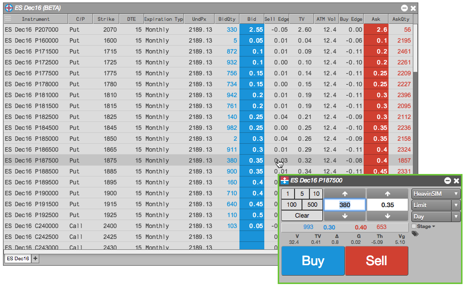
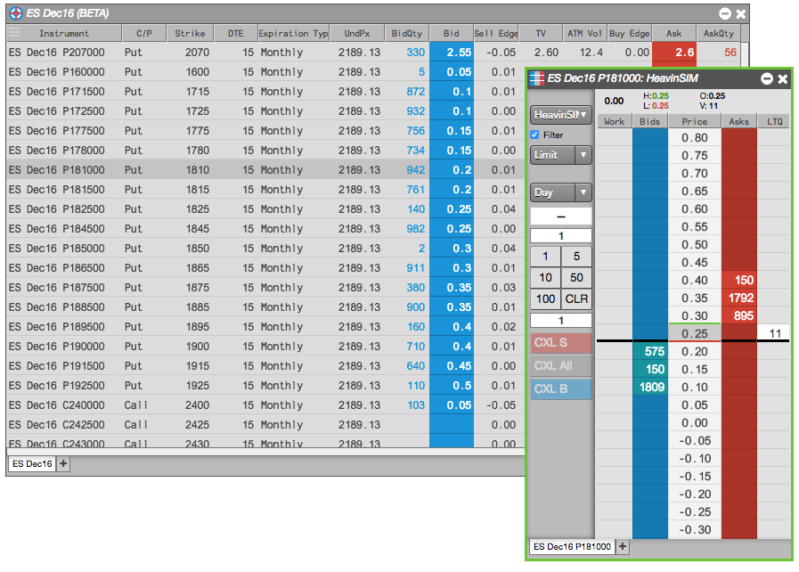
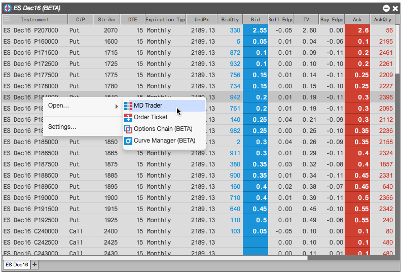
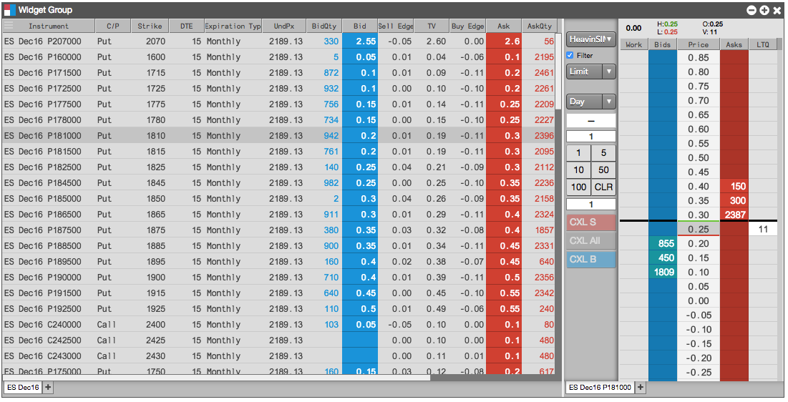

You can submit orders in the Electronic Eye by opening a floating order entry window (e.g., MD Trader®) or linked widget (e.g., Order Ticket). You can also trade from the Electronic Eye by grouping it with an order entry widget and creating a widget group.
Trading with a Floating Order Entry Order Ticket
To trade with a floating order entry order ticket:
Click in one of the following column values in the Electronic Eye to open an Order Ticket:

- Enter the remaining order information in the order ticket and submit the order.
Trading with a Floating Order Entry MD Trader®
To trade with a floating order entry MD Trader:
Click one of the following column values in the Electronic Eye:
- BidQty
- Bid
- Ask
- AskQty
- Buy Edge
- Sell Edge
- TV

- Enter the remaining order information in MD Trader and submit the order.
Trading with a Linked Widget
To trade with a linked widget:
-
Right-click on the instrument to select Launch linked... and click on a widget (e.g., Order Ticket).

The widget opens populated with market data for the selected instrument (e.g., ES Dec16). The border of the widget is yellow indicating it is linked to the Electronic Eye.

-
Select another instrument in the Electronic Eye (e.g., ES Mar17).
The linked widget is seeded automatically with the new instrument.

Trading with a Grouped Widget
To trade with a grouped widget:
-
Right-click on the instrument to select Open and click on a widget (e.g., MD Trader®)

-
Right-click in the opened widget title bar to select Group widget... and create a widget group.

-
Enter an order in the docked (grouped) MD Trader widget.